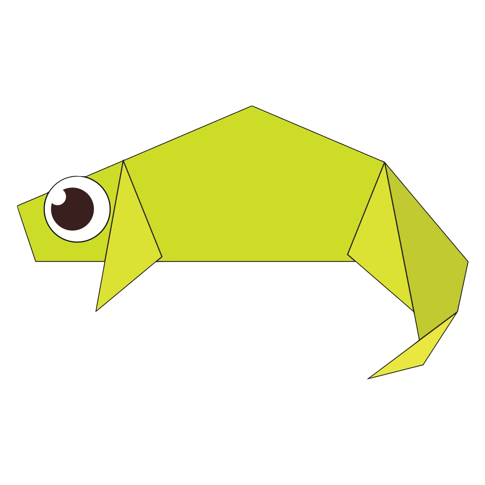

ORIGAMI DESIGNS
About Us!
Follow Us!
 CLICK TO WATCH HOW TO MAKE AN ORIGAMI CAMEL!!
CLICK TO WATCH HOW TO MAKE AN ORIGAMI CAMEL!!
Interesting facts about camel!
- There are two types of camels: One humped or “dromedary” camels and two humped Bactrian camels.
- Camels have three sets of eyelids and two rows of eyelashes to keep sand out of their eyes.
- Camels have thick lips which let them forage for thorny plants other animals can't eat

CLICK TO WATCH HOW TO MAKE AN ORIGAMI CHAMELEON!!
Interesting facts about chameleon!
- THEIR FEET WORK LIKE SALAD TONGS
- ALMOST HALF OF ALL KNOWN SPECIES LIVE IN MADAGASCAR.
- THEY MAINLY CHANGE COLOR IN ORDER TO COMMUNICATE OR REGULATE BODY TEMPERATURE
 CLICK TO WATCH HOW TO MAKE AN ORIGAMI PIGEON!!
CLICK TO WATCH HOW TO MAKE AN ORIGAMI PIGEON!!
Interesting facts about pigeon!
- Pigeons are incredibly complex and intelligent animals.
- Pigeons are renowned for their outstanding navigational abilities.
- Pigeons are highly sociable animals
 CLICK TO WATCH HOW TO MAKE AN ORIGAMI TEDDY BEAR!!
CLICK TO WATCH HOW TO MAKE AN ORIGAMI TEDDY BEAR!!
Interesting facts about teddybears!
- Teddy bears got their name from the story that Teddy Roosevelt refused to shoot a bear cub while on a hunting trip in 1902.
- The first toy stuffed bear was created by German toymaker Margarete Steiff.
- She created a soft plush with movable arms and legs and a friendly face after taking her nephew to the zoo in 1903
 CLICK TO WATCH HOW TO MAKE AN ORIGAMI PANDA!!
CLICK TO WATCH HOW TO MAKE AN ORIGAMI PANDA!!
Interesting facts about teddybears!
- Pandas go from pink to white and black (or brown).
- Pandas have so many fans because they look cute.
- Pandas are "lazy" — eating and sleeping make their day
 CLICK TO WATCH HOW TO MAKE AN ORIGAMI FLYING CICADA!!
CLICK TO WATCH HOW TO MAKE AN ORIGAMI FLYING CICADA!!
Interesting facts about flying cicadas!
- The loud whirring or buzzing sound you hear is an all-male cicada chorus.
- Most have red-orange eyes..
- females may be attracted to the sound of motors